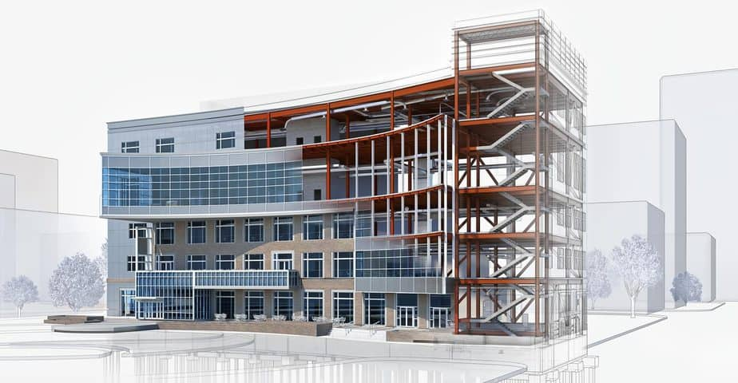

1. INTRODUCCIÓN A LAS ESTRUCTURAS
¿Qué son las estructuras?

¿Te has preguntado alguna vez por qué no te caes al caminar? ¿O cómo es posible que un rascacielos de cientos de metros de altura se mantenga en pie sin desplomarse? La respuesta está en algo que nos rodea constantemente: las estructuras.
Una estructura es un conjunto de elementos unidos entre sí que son capaces de soportar fuerzas y cargas sin romperse, deformarse excesivamente o caerse. Su función principal es mantener una forma determinada y transmitir las fuerzas que actúan sobre ella hasta los puntos donde se apoya.
Definición técnica
Definición
Un conjunto de elementos unidos entre sí capaces de soportar las fuerzas que actúan sobre ellas, conservando su forma y transmitiendo estas fuerzas hasta sus apoyos.
Además de soportar o resistir las cargas (resistencia), también deben hacerlo sin deformarse mucho (rigidez), ni volcar o caerse (estabilidad).
¿Por qué son importantes las estructuras?
Las estructuras son fundamentales en nuestras vidas porque:
🏠 En la vida humana: Sin estructuras resistentes no existirían casas seguras, puentes estables, coches seguros o medios de transporte eficientes. Hacen posible que edifiquemos desde una sencilla silla hasta los rascacielos más altos del mundo.
🌿 En la naturaleza: Permiten a los seres vivos moverse, protegerse y sobrevivir. Desde el esqueleto que sostiene nuestro cuerpo hasta el caparazón que protege a una tortuga.
Estructuras que nos rodean
Mira a tu alrededor. En este mismo momento estás rodeado de estructuras:

- La silla en la que te sientas tiene una estructura que soporta tu peso.
- El edificio donde estudias tiene pilares y vigas que sostienen los techos y las paredes.
- Tu propio cuerpo tiene una estructura: el esqueleto, que te permite mantenerte erguido.
- La mesa del aula está diseñada para soportar libros, cuadernos y materiales.
- El puente que cruzas para llegar al instituto permite el paso seguro sobre obstáculos.
Tipos de estructuras según su origen
Estructuras Naturales

Son aquellas que no han sido creadas por el ser humano, sino que forman parte de la naturaleza. La naturaleza es una ingeniera extraordinaria que ha creado estructuras increíbles:
Ejemplos:
- Esqueleto humano y animal: Da forma y soporte al cuerpo. Tu esqueleto tiene 206 huesos que trabajan juntos para sostenerte
- Caparazones: Protegen a animales como tortugas, caracoles o cangrejos
- Troncos y ramas de los árboles: Resisten el viento y sostienen las hojas para captar la luz solar
- Exoesqueletos: Como el de los insectos, que les proporciona protección y estructura
- Nidos de pájaros: Estructuras increíblemente resistentes hechas con ramas, barro y otros materiales
- Colmenas de abejas: Estructuras hexagonales perfectas que optimizan el espacio
- Telas de araña: Estructuras flexibles pero extremadamente resistentes
- Cuevas: Formadas por la erosión del agua en la roca
- Montañas: Estructuras rocosas que resisten enormes fuerzas
- Formaciones rocosas: Como arcos naturales o acantilados
Estructuras Artificiales

Son aquellas creadas por el ser humano para satisfacer diferentes necesidades. Los humanos hemos aprendido de la naturaleza para crear nuestras propias estructuras:
Ejemplos:
- Edificios y rascacielos: Como el Empire State Building, construido en 1929 con 102 pisos
- Puentes: Desde los simples de madera hasta los colgantes que salvan grandes distancias
-
Torres: Como la Torre Eiffel, construida en 1889 con hierro forjado y que pesa 6.300 toneladas
-
Mobiliario: Sillas, mesas, estanterías
- Vehículos: El chasis de un coche que protege a los pasajeros
- Electrodomésticos: La carcasa de un ordenador o un televisor
- Deportivos: Porterías, canastas de baloncesto, redes de tenis
Ejemplos históricos fascinantes
La Torre Eiffel 🗼

- Construida en 1889 en París
- Hecha completamente de hierro forjado
- Pesa 6.300 toneladas
- Fue una demostración de que las estructuras metálicas podían ser ligeras y resistentes
El Empire State Building 🏢
- Uno de los primeros rascacielos del mundo
- Construido en 1929 en Nueva York
- Tiene 102 pisos
- Su estructura de acero permite alcanzar esas alturas de forma segura
Los puentes romanos 🌉
- Construidos hace más de 2000 años
- Utilizaban arcos de piedra
- Muchos siguen en pie y funcionando hoy en día
- Demuestran la importancia de una buena estructura[^10]
Curiosidades estructurales
🦴 ¿Sabías que...?
¿Sabias qué..?
- El esqueleto humano representa aproximadamente el 12% del peso total del cuerpo
- Una pajita de refresco puede resistir aproximadamente 10 kg cuando está sometida a tracción
- El hueso más fuerte del cuerpo humano es el fémur, que puede soportar hasta 30 veces el peso corporal
- Los nidos de algunas aves pueden resistir vientos de más de 100 km/h
Conceptos clave para recordar
📝 Glosario del tema:
- Estructura: Conjunto de elementos unidos que soportan fuerzas sin romperse
- Carga: Fuerza que actúa sobre una estructura
- Resistencia: Capacidad de soportar fuerzas sin romperse
- Rigidez: Capacidad de mantener la forma sin deformarse excesivamente
- Estabilidad: Capacidad de no volcarse o perder el equilibrio
- Estructura natural: Creada por la naturaleza sin intervención humana
- Estructura artificial: Diseñada y construida por el ser humano
¡Felicidades! Has completado la introducción al fascinante mundo de las estructuras resistentes. Ahora entiendes qué son, por qué son importantes y cómo nos rodean en cada momento de nuestras vidas. En el próximo apartado exploraremos los diferentes tipos de estructuras artificiales que los ingenieros y arquitectos han diseñado a lo largo de la historia.